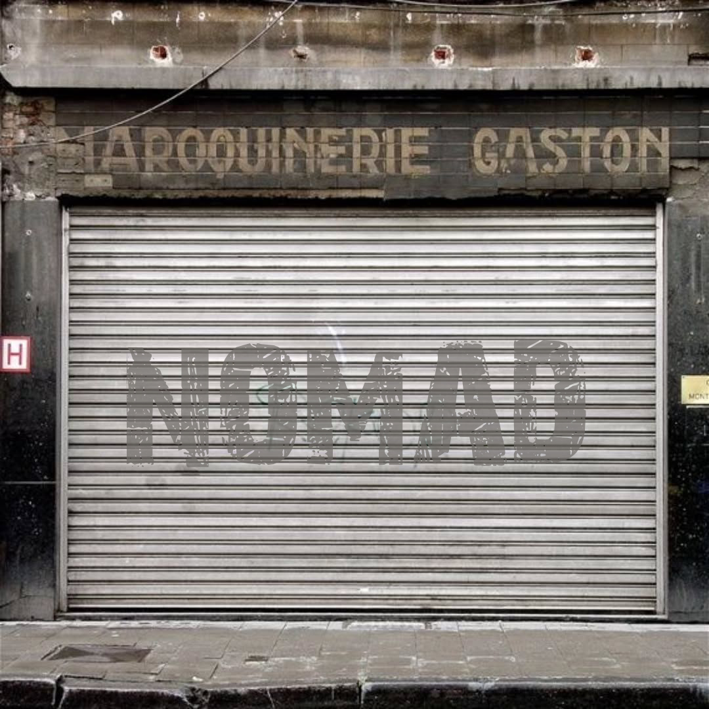

NOMAD is more than just a streetwear brand — it's a movement. Born from a passion for freedom, creativity, and authenticity, we represent those who don’t follow the crowd, but walk their own path.
Every piece we design is crafted with purpose, boldness, and attention to detail. Whether you're out on the streets or making moves in silence, NOMAD walks with you.
